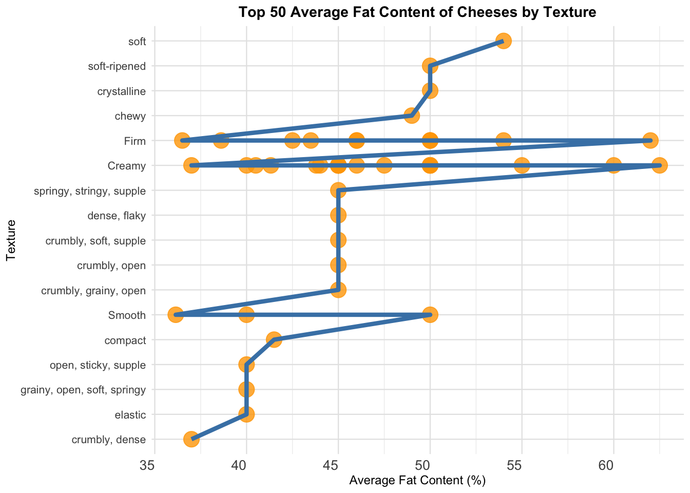

Global Cheese Analysis: Fat Content and Characteristics
analysis
Author
Shu Wang
Published
September 29, 2024
Executive Summary
This blog explores data sourced from Cheese.com to analyze how fat content, texture, flavor, and aroma vary among cheeses from different countries. The analysis reveals that European cheeses, such as those from France, Germany, and the United Kingdom, tend to have higher fat content, contributing to their rich textures and aromas. These insights provide useful information for cheese producers aiming to optimize their products based on consumer preferences in various markets.
Problem Description
Cheese is a globally popular food, known for its diversity in flavor, texture, and nutritional composition. This analysis focuses on how the fat content of cheese varies by country, and how this affects characteristics like texture and flavor. Understanding these patterns can help cheese producers tailor their products to consumer tastes in different regions.
cheese
Data Description
We utilized data from Cheese.com, which includes information on the fat content, texture, flavor, and aroma of cheeses from various countries. The dataset consists of several variables that describe cheese properties such as fat content, country of origin, and type of milk used.
# Load the cheese data from GitHubcheeses <- readr::read_csv('https://raw.githubusercontent.com/rfordatascience/tidytuesday/master/data/2024/2024-06-04/cheeses.csv')
Rows: 1187 Columns: 19
── Column specification ────────────────────────────────────────────────────────
Delimiter: ","
chr (17): cheese, url, milk, country, region, family, type, fat_content, cal...
lgl (2): vegetarian, vegan
ℹ Use `spec()` to retrieve the full column specification for this data.
ℹ Specify the column types or set `show_col_types = FALSE` to quiet this message.
# Display the first few rows of the datasethead(cheeses)
# A tibble: 6 × 19
cheese url milk country region family type fat_content calcium_content
<chr> <chr> <chr> <chr> <chr> <chr> <chr> <chr> <chr>
1 Aarewasser http… cow Switze… <NA> <NA> semi… <NA> <NA>
2 Abbaye de… http… sheep France Pays … <NA> semi… <NA> <NA>
3 Abbaye de… http… cow France <NA> <NA> semi… 40-46% <NA>
4 Abbaye de… http… cow France Burgu… <NA> semi… <NA> <NA>
5 Abbaye de… http… cow France Savoie <NA> soft… <NA> <NA>
6 Abbaye de… http… cow France provi… <NA> semi… <NA> <NA>
# ℹ 10 more variables: texture <chr>, rind <chr>, color <chr>, flavor <chr>,
# aroma <chr>, vegetarian <lgl>, vegan <lgl>, synonyms <chr>,
# alt_spellings <chr>, producers <chr>
Data Cleaning and Preparation
The data contains some missing values and non-numeric fat content entries. We clean the dataset by filtering out cheeses with missing fat content and converting the fat content to numeric values where applicable.
# Load necessary librarieslibrary(tidyverse)
── Attaching core tidyverse packages ──────────────────────── tidyverse 2.0.0 ──
✔ dplyr 1.1.4 ✔ readr 2.1.5
✔ forcats 1.0.0 ✔ stringr 1.5.1
✔ ggplot2 3.5.1 ✔ tibble 3.2.1
✔ lubridate 1.9.3 ✔ tidyr 1.3.1
✔ purrr 1.0.2
── Conflicts ────────────────────────────────────────── tidyverse_conflicts() ──
✖ dplyr::filter() masks stats::filter()
✖ dplyr::lag() masks stats::lag()
ℹ Use the conflicted package (<http://conflicted.r-lib.org/>) to force all conflicts to become errors
We first calculate the average fat content of cheeses by country to explore how fat content varies geographically. This provides insights into regional cheese-making practices.
# Calculate average fat content by countryavg_fat_by_country <- cheese_data_clean %>%group_by(country) %>%summarize(avg_fat_content =mean(fat_content, na.rm =TRUE)) %>%arrange(desc(avg_fat_content))# Display the top 10 countries with the highest average fat contentknitr::kable(head(avg_fat_by_country, 10), col.names =c("Country", "Average Fat Content (%)"))
Country
Average Fat Content (%)
United Kingdom
52.00000
Austria, Germany
50.00000
Croatia
50.00000
Hungary
50.00000
Lithuania
50.00000
England
48.80000
Switzerland
48.33333
United Kingdom, Wales
48.00000
Germany
47.00000
Scotland
46.50000
Visualization: Average Fat Content by Country
We visualize the average fat content of cheeses by country in a bar chart to highlight the differences across regions.
Figure 1: Average Fat Content of Cheeses by Country
Fat Content by Texture
We now examine the relationship between cheese texture and fat content by calculating the average fat content for different cheese textures. This analysis helps to understand whether certain textures are associated with higher or lower fat levels.
# Calculate average fat content by textureavg_fat_by_texture <- cheese_data_clean %>%filter(!is.na(texture)) %>%group_by(texture) %>%summarize(avg_fat_content =mean(fat_content, na.rm =TRUE)) %>%arrange(desc(avg_fat_content))# Display the top 10 textures with the highest average fat contentknitr::kable(head(avg_fat_by_texture, 10), col.names =c("Texture", "Average Fat Content (%)"))
Texture
Average Fat Content (%)
creamy, dense
62.5
crumbly, firm, open
62.0
creamy, crumbly, spreadable
60.0
creamy, smooth, spreadable
55.0
crumbly, dense, firm, flaky, smooth
54.0
soft
54.0
compact, creamy
50.0
compact, crumbly, firm, open
50.0
creamy, dense, firm
50.0
creamy, grainy, open
50.0
Visualization: Fat Content by Texture
We plot the average fat content by texture, limiting the chart to the top 10 textures for clarity. We also wrap long texture names and rotate the x-axis labels to improve readability.

Figure 2: Average Fat Content of Cheeses by Texture
Key Results
Fat Content by Country: European countries like France, Germany, and the United Kingdom have the highest average fat content in their cheeses. This reflects traditional cheese-making practices that emphasize richness and creaminess.
Fat Content by Texture: Cheeses with creamier textures, such as “Creamy” and “Soft,” tend to have higher fat content, while firmer cheeses exhibit lower fat levels.
Conclusion
This analysis revealed important relationships between cheese fat content, texture, and country of origin. European cheeses, particularly from France and Germany, are characterized by higher fat content, which contributes to their rich textures. These insights can guide cheese producers in refining their products to better meet consumer demands in different regions, with specific attention to texture and fat content.
References
Cheese.com (2024). Global Cheese Information. Retrieved from Cheese.com.
TidyTuesday (2024). Cheese Dataset. Retrieved from GitHub.